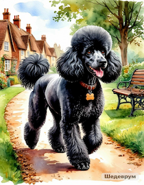
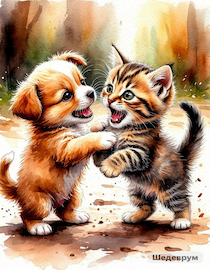

Шедеврум 2026: как начинался самый щедрый ИИ и почему он стал платным
Привет, бро! 👋
Когда в конце 2024 года Яндекс выпустил Шедеврум, это был настоящий взрыв в русскоязычном интернете. Все только и говорили: «Наконец-то нормальный бесплатный ИИ для генерации картинок!», «Русский Midjourney», «Можно генерировать сколько угодно».
Я тоже сразу зашёл попробовать. И честно скажу — первые впечатления были очень сильными. Картинки выходили яркие, атмосферные, а главное — промпты на русском языке работали действительно хорошо. Тогда казалось, что появился настоящий конкурент западным сервисам.
Сегодня, в 2026 году, давай спокойно и подробно разберёмся: как Шедеврум начинался, как менялся со временем и стоит ли им пользоваться сейчас.
Кто стоит за Шедеврумом
Шедеврум — это полностью проект Яндекса. Он создан на базе их собственной генеративной модели YandexART.
Сразу уточню, чтобы не было путаницы: Шедеврум не имеет отношения к нейросети Kandinsky. Kandinsky — это разработка Сбера, совершенно другой проект. Хотя оба сервиса российские и появились примерно в одно время, они развиваются независимо друг от друга.
Яндекс поставил перед собой амбициозную задачу — сделать мощный инструмент генерации изображений, который хорошо понимает русский язык и может составить конкуренцию Midjourney, Leonardo.AI, Flux и DALL·E.
Золотой период: «Бесплатно и почти без ограничений»
Первые несколько месяцев после запуска Шедеврум реально был одним из самых щедрых ИИ на рынке:
- ✅ Генерация полностью бесплатная
- ✅ Качество изображений оказалось на очень достойном уровне
- ✅ Особенно хорошо он понимает сложные промпты на русском языке
- ✅ Цензура была заметно мягче, чем у американских и европейских сервисов
- ✅ Интерфейс сделали простой и удобный — зашёл, написал промпт и получил результат
💬 Многие пользователи тогда писали в отзывах: «Наконец-то появился ИИ, которым можно пользоваться каждый день практически без ограничения генерации картинок, может и есть ограничения но я то такого не доходил,это в мобильном приложении». И это действительно было так и так осталось.
Как появился платный тариф
Со временем, как и у большинства современных ИИ, у Шедеврума появилась монетизация. Через год Шедеврум апгрейдился, можно так сказать. Добавилась генерация видео, улучшенные функции. Сейчас подписка работает следующим образом:
Шедеврум Про — первые 7 дней полностью бесплатно. После пробного периода — 100 рублей в месяц, но только если у тебя уже есть подписка Яндекс Плюс.
Что даёт платная версия?
| Параметр | Бесплатно | Шедеврум Про |
|---|---|---|
| Генераций в день | много | Неограниченно (или очень много) |
| Скорость | Обычная очередь | Приоритетная |
| Доступ к видео | Ограничено | Полностью |
| Цена | 0 ₽ | 100 ₽/мес (с Яндекс Плюс) |
Как изменилось качество к 2026 году
Я продолжаю пользоваться Шедеврумом и сейчас. Разница с первыми месяцами есть, но она не такая катастрофическая, как иногда пишут в комментариях.
Плюсы Шедеврума в 2026 году:
- 🎨 Картинки до сих пор получаются яркие, сочные и детализированные
- 🇷 Хорошо работает с русским языком (это одно из главных преимуществ перед многими западными ИИ)
- 🚀 Отлично справляется с фантастическими, мультяшными и стилизованными работами
- 🛡️ Стабильное качество даже при сложных промптах
Вот свежий пример, который я недавно сгенерировал:
«gav и cat»
Смотрится живо и с характером. Кстати, важный момент: будьте готовы, что ваши промпты и готовые картинки могут использовать другие люди. Там нет жёсткого запрета на плагиат. У меня вот этого розового крокодила уже растащили по разным каналам. Красавчика можете увидеть у меня в Telegram-боте.

Промпт: [по дорожке вышагивает большой, ухоженный, важный, породистый чёрный пудель:- английская акварель, эмоции,детализация разговоров, юмор шарж, скорость движения, смешная, милая иллюстрация]

Промпт: [щенок и котёнок, свара, драка,потасовка, милота,забавная,смешная история- мокрая акварель на морском картоне, сфумато, эмоции, детализация движения, скорость]
Видео и анимация
С видео у Шедеврума пока всё скромнее. Сейчас он умеет делать:
- ⏱️ Таймлапсы (вращение объекта, зум)
- ✨ Оживление статичных картинок
Полноценное длинное видео ещё заметно отстаёт от лидеров рынка, но короткие анимации и оживление уже получаются вполне достойно, особенно на платной подписке.
Личный опыт и другие нейросети
А в остальном — всё просто: зарегистрировался и творишь. Никакого сложного английского интерфейса, как в HeyGen при создании аватара. Я в HeyGen, если честно, сначала вообще не понял, что от меня требуется, но в итоге аватар получился с первого раза. Теперь он стоит у моего Telegram-бота и говорит на русском.
Ещё одна нейросеть, которую я хорошо помню — PIKA. Это была, наверное, была сеть до Шедеврума, где я активно пробовал свои силы. На тот момент мне она очень нравилась. Первая версия (V1) была бесплатная. Я мог сидеть там по полдня и генерировать короткие видео по 3 секунды. Картинки тогда казались очень достойными.
Сейчас, когда появилось много других инструментов и возможность сравнивать, понимаю, что качество было среднее. Но тогда это был настоящий вау-эффект. К сожалению, сейчас в PIKA нормальное видео без денег уже почти не сделаешь. Всё перешло на платную модель. Грустно наблюдать, как один за другим хорошие инструменты уходят в платный сегмент.
“Pika Labs — американский сервис для генерации видео по тексту. Начался как бесплатный, но сейчас требует подписку от $8/мес.”
В Телеграм выложу видео от PIKA, делать из них 15ти секундное вмдео, та ещё заморочка, но ничего делал было прикольно, сечас даже не знаю полное видео осталось, но короткие точно в Телеграм- боте выложу.
HeyGen — инструмент для создания AI-аватаров и озвучки. Отлично работает с русским языком, когда пишешь промт, но интерфейс английски сложный для новичков.”
Аватар стоит у меня в телеге русский вариант, английский поставил в Инстаграм
🎥 Пример анимации из PIKA
Промпт: «Лиса волк медведь в избушке, комнате за столом играют. окно, стол. сидят на стульях»
Как начать работать с Шедеврумом?
- Зайди на официальный сайт
- Авторизуйся через Яндекс ID (или создай аккаунт)
- Напиши промпт на русском — например: «космонавт играет на гитаре на Марсе»
- промпт лучше писать подробно, какую картинку ты хочешь увидеть, свет , тень, гримасы.
- Получи результат за 10–30 секунд. иногда 5минут, зависит от загруженности ресурса
- Сохрани или поделись в соцсетях
Итог
Шедеврум прошёл типичный путь современных ИИ-сервисов: от максимально щедрого бесплатного этапа к сбалансированной модели с бесплатной и платной версиями.
Картинки у него до сих пор получаются хорошие, особенно если тебе нравится яркий, выразительный и атмосферный стиль. Для многих пользователей бесплатной версии всё ещё хватает, а за 100 рублей в месяц можно получить уже заметно более комфортный опыт.
🤖 Хочешь увидеть генерацию розового крокодила?
Заходи в мой Telegram-бот @citadel_test_quote_bot — там он ждёт тебя!
А как у тебя обстоят дела с Шедеврумом, бро?
- Пробовал его в самом начале и сейчас?
- Какое качество тебе нравится больше — тогда или сейчас?
- Продолжаешь пользоваться бесплатной версией или уже перешёл на Про?
Пиши в комментариях свои мысли, примеры генераций и впечатления. Будет интересно почитать и обсудить!
Друзья для девятой статьи собираю промпты для генерации в нейросетях, пока не со всеми договорился, так что статья выйдет попозже
ЧТо посоветуете про забытого Кандинского (лично мною) тут добавить или новую статью сделать?